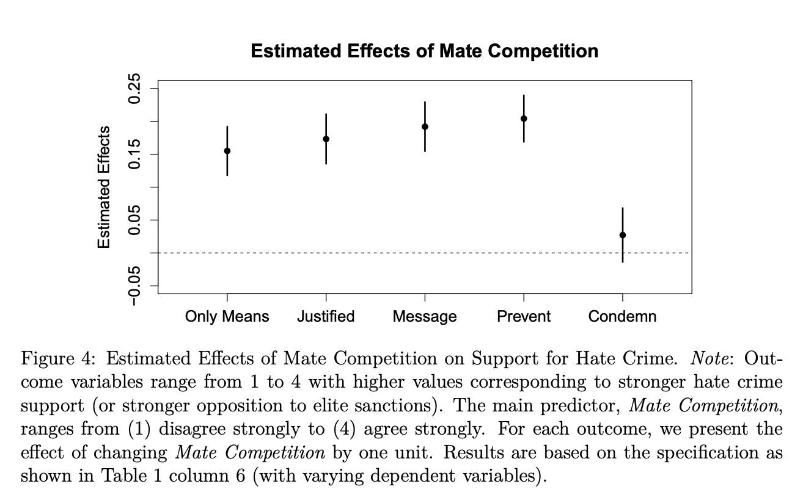

## Load Data
florida <- read.csv("https://raw.githubusercontent.com/ktmccabe/teachingdata/main/florida.csv")4 Review of OLS
This section will provide a review of OLS.
OLS is the workhorse of empirical political science. We will learn a lot beyond OLS, but OLS is often “good enough” and sometimes preferable for explaining the relationship between variables. That is to say, MLE will expand your toolkit, but OLS should remain a big part of your toolkit.
I recommend that you review the following readings to familiarize yourself with regression. I will make note within this section where particular readings are most relevant. These readings are available on Canvas in the modules- Week 1 section.
Wheelan, Charles. 2012. Naked Statistics. W.W. Norton. Chapter 11. This provides an accessible overview of regression and the interpretation of regression results.
Gelman, Andrew, and Jennifer Hill. 2006. Data analysis using regression and multilevel/hierarchical models. Cambridge University Press. Chapter 3. This is a slightly more technical overview and includes some R code for running regressions.
Building models and breaking models.
- (Optional) Fox, John. 2015. Applied Regression Analysis and Generalized Linear Models, 2nd Edition. Sage. Chapter 11. This reading describes diagnostic tests to probe whether the model is a good fit of the data. We won’t go into detail about this in this class, but is material classes focused on linear regression will generally cover.
- Messing, Solomon. “How to break regression.”
- Lenz, G., & Sahn, A. (2020). “Achieving Statistical Significance with Control Variables and Without Transparency.” Political Analysis, 1-14. doi:10.1017/pan.2020.31. This paper talks about how to build a regression model, and in particular, why adding more and more controls isn’t always a good thing.
4.1 Introducing OLS Regression
The regression method describes how one variable depends on one or more other variables. Ordinary Least Squares regression is a linear model with the matrix representation:
\(Y = \alpha + X\beta + \epsilon\)
Given values of variables in \(X\), the model predicts the average of an outcome variable \(Y\). For example, if \(Y\) is a measure of how wealthy a country is, \(X\) may contain measures related to the country’s natural resources and/or features of its institutions (things that we think might contribute to how wealthy a country is.) In this equation:
- \(Y\) is the outcome variable (\(n \times 1\)).1
- \(\alpha\) is a parameter representing the intercept
- \(\beta\) is a parameter representing the slope/marginal effect (\(k \times 1\)), and
- \(\epsilon\) is the error term (\(n \times 1\)).
In OLS, we estimate a line of best fit to predict \(\hat{Y}\) values for different values of X:
- \(\hat{Y} = \hat{\alpha} + X\hat{\beta}\).
- When you see a “\(\hat{hat}\)” on top of a letter, that means it is an estimate of a parameter.
- As we will see in the next section, in multiple regression, sometimes this equation is represented as just \(\hat{Y} = X\hat{\beta}\), where this generally means that \(X\) is a matrix that includes several variables and \(\hat \beta\) is a vector that includes several coefficients, including a coefficient representing the intercept \(\hat \alpha\)
We interpret linear regression coefficients as describing how a dependent variable is expected to change when a particular independent variable changes by a certain amount. Specifically:
- “Associated with each one unit increase in a variable \(x_1\), there is a \(\hat{\beta_1}\) estimated expected average increase in \(y\).”
- If we have more than one explanatory variable (i.e., a multiple regression), we add the phrase “controlling on/ holding constant other observed factors included in the model.”
We can think of the interpretation of a coefficient in multiple regression using an analogy to a set of light switches:

We ask: How much does the light in the room change when we flip one switch, while holding constant the position of all the other switches?
This would be a good place to review the Wheelan chapter and Gelman and Hill 3.1 and 3.2 to reinforce what a regression is and how to interpret regression results.
4.2 Diving Deeper into OLS Matrix Representation
In this section, we will review the matrix representation of the OLS regression in more detail and discuss how to derive the estimators for the regression coefficients.2
OLS in Matrix Form: Let \(X\) be an \(n \times k\) matrix where we have observations on k independent variables for n observations. Since our model will usually contain a constant term, one of the columns in the X matrix will contain only ones. This column should be treated exactly the same as any other column in the X matrix.
- Let \(Y\) be an \(n \times 1\) vector of observations on the dependent variable. Note: because \(Y\) is a vector (a matrix with just one column), sometimes it is written in lowercase notation as \(\mathbf y\).
- Let \(\epsilon\) be an \(n \times 1\) vector of disturbances or errors.
- Let \(\beta\) be an \(k \times 1\) vector of unknown population parameters that we want to estimate.
\(\begin{pmatrix} y_1 \\ y_2 \\ y_3 \\ y_4 \\ ... \\ y_n \end{pmatrix}\) = \(\begin{pmatrix} 1 & x_{11} & x_{12} & x_{13} & ... & x_{1k}\\ 1 & x_{21} & x_{22} & x_{23} & ... & x_{2k} \\ 1 & x_{31} & x_{32} & x_{33} & ... & x_{3k}\\ 1 & x_{41} & x_{42} & x_{43} & ... & x_{4k} \\ ... & ... & ... & ... & ... & ... \\ 1 & x_{n1} & x_{n2} & x_{n3} & ... & x_{nk}\end{pmatrix}\) X \(\begin{pmatrix} \alpha \\ \beta_1 \\ \beta_2 \\ \beta_3 \\ ... \\ \beta_k \end{pmatrix}\) + \(\begin{pmatrix} \epsilon_1 \\ \epsilon_2 \\ \epsilon_3 \\ \epsilon_4 \\ ... \\ \epsilon_n \end{pmatrix}\)
Our estimates are then \(\mathbf{ \hat y} = X\hat \beta\). What are the dimensions of this quantity?
Gelman and Hill Section 3.4, pg. 38 provides a nice visual of how this representation maps onto what a typical dataset may look like, where we will try to estimate a set of coefficients that map the relationship between the columns of \(X\) and \(\mathbf y\):
 \
\
This is a good place to review Gelman and Hill 3.4 on different notations for representing the regression model.
4.2.1 Estimating the Coefficients
Models generally start with some goal. In OLS, our goal is to minimize the sum of squared “residuals.” Here is a video I created to explain why we can represent this as \(\mathbf{e'}\mathbf{e}\).
Note: at the end of the video it should read \(X\hat\beta\), not \(\hat X \beta\)
What is a residual? It’s the difference between y and our estimate of y: \(y - \hat y\). It represents the error in our prediction– how far off our estimate is of the outcome.
We can write this in matrix notation in the following way where \(\mathbf e\) is an \(n \times 1\) vector of residuals– a residual for each observation in the data:
\[\begin{align*} \mathbf{e'}\mathbf{e} &= (Y' - \hat{\beta}'X')(Y - X\hat{\beta})\\ &=Y'Y - \hat{\beta}'X'Y - Y'X\hat{\beta} + \hat{\beta}'X'X\hat{\beta} \\ &= Y'Y - 2\hat{\beta}'X'Y + \hat{\beta}'X'X\hat{\beta} \end{align*}\]Recall we want a line that minimizes this quantity. We minimize the sum of squared residuals by taking the derivative with respect to \(\beta\). (We want to identify the coefficients that help us achieve the goal of minimizing the squared error.) Because we are now deriving an estimate, we will use the hat over \(\beta\):
- \(\frac{\delta }{\delta \hat \beta} = -2X'Y + 2X'X\hat{\beta}\)
- So what is our estimate for \(\hat{\beta}\)? We take first order conditions
You may wonder how we got to these answers. Don’t worry, you will get your chance to solve this! The important thing to note for now, is that we have an analytic solution to our coefficient estimates.
4.3 OLS Regression in R
To run a linear regression in R, we use the lm() function.
The syntax is lm(y ~ x1, data = mydata) for a regression with y as the name of your dependent variable and there is one explanatory variable x1 where mydata is the name of your data frame.
lm(y ~ x1 + x2 , data = mydata) is the syntax for a regression with two explanatory variables x1 and x2, where you would add additional variables for larger multivariate regressions. By default, R will include an intercept term in the regression.
4.3.1 Example: Predicting Current Election Votes from Past Election Votes
In the American presidential election in 2000, there was an actual controversy in how ballots were cast in the state of Florida. Social scientists used data comparing the election results from 1996 in the state with 2000 as one way to help detect irregularities in the 2000 vote count. For more information on the background of this example, you can watch this video.
We will use the data florida.csv available here:
This data set includes several variables described below, where each row represents the voting information for a particular county in Florida.
| Name | Description |
|---|---|
county |
county name |
Clinton96 |
Clinton’s votes in 1996 |
Dole96 |
Dole’s votes in 1996 |
Perot96 |
Perot’s votes in 1996 |
Bush00 |
Bush’s votes in 2000 |
Gore00 |
Gore’s votes in 2000 |
Buchanan00 |
Buchanan’s votes in 2000 |
In 2000, Buchanan was a third party candidate, similar to Perot in 1996. One might think that counties where Perot received a lot of votes in 1996 should also receive a lot in 2000. That is: with a one-vote increase in Perot’s vote, we might expect an average increase in Buchanan’s 2000 vote.
We can translate that language into a regression equation:
- \(Buchanan2000 = \alpha + Perot1996 * \beta + \epsilon\)
In R, we run this regression the following way. We will save it as an object fit.1. You can name your regression objects anything you want.
fit.1 <- lm(Buchanan00 ~ Perot96, data = florida)summary(model)provides the summary statistics of the model. In particular, the following statistics are importantEstimate: point estimate of each coefficientStd. Error: standard error of each estimatet value: indicates the \(t\)-statistic of each coefficient under the null hypothesis that it equals zeroPr(>|t|): indicates the two-sided \(p\)-value corresponding to this \(t\)-statistic where asterisks indicate the level of statistical significance.Multiple R-squared: The coefficient of determinationAdjusted R-squared: The coefficient of determination adjusting for the degrees of freedom
We will say more to define these quantities in future sections.
summary(fit.1)
Call:
lm(formula = Buchanan00 ~ Perot96, data = florida)
Residuals:
Min 1Q Median 3Q Max
-612.74 -65.96 1.94 32.88 2301.66
Coefficients:
Estimate Std. Error t value Pr(>|t|)
(Intercept) 1.34575 49.75931 0.027 0.979
Perot96 0.03592 0.00434 8.275 9.47e-12 ***
---
Signif. codes: 0 '***' 0.001 '**' 0.01 '*' 0.05 '.' 0.1 ' ' 1
Residual standard error: 316.4 on 65 degrees of freedom
Multiple R-squared: 0.513, Adjusted R-squared: 0.5055
F-statistic: 68.48 on 1 and 65 DF, p-value: 9.474e-12R also allows several shortcuts for accessing particular elements of your regression results. Examples:
## Vector of the coefficient estimates only
coef(fit.1)(Intercept) Perot96
1.34575212 0.03591504 ## Compute confidence intervals for these coefficients
confint(fit.1) 2.5 % 97.5 %
(Intercept) -98.03044506 100.72194929
Perot96 0.02724733 0.04458275## Table of coefficient results only
summary(fit.1)$coefficients Estimate Std. Error t value Pr(>|t|)
(Intercept) 1.34575212 49.759306434 0.02704523 9.785065e-01
Perot96 0.03591504 0.004340068 8.27522567 9.473505e-12## Extract standard errors only
summary(fit.1)$coefficients[,2] (Intercept) Perot96
49.759306434 0.004340068 ## Variance-Covariance matrix
vcov(fit.1) (Intercept) Perot96
(Intercept) 2475.9885768 -1.360074e-01
Perot96 -0.1360074 1.883619e-05## Note that the square root of the diagonal of this matrix provides the standard errors
sqrt(diag(vcov(fit.1))) (Intercept) Perot96
49.759306434 0.004340068 ## Degrees of freedom
fit.1$df.residual[1] 654.3.2 Plotting Regression Results
We often don’t want to hide our data under a bushel basket or in complicated regression models. Instead, we might also want to visualize data in R. The function plot() and the function ggplot() from the package ggplot2 are two terrific and flexible functions for visualizing data. We will use the plot() function to visualize the relationship between Perot and Buchanan votes. The example below provides a few arguments you can use within each of these functions, but they are capable of much more.
At the core, plotting functions generally work as coordinate systems. You tell R specifically at which x and y coordinates you want your points to be located (e.g., by providing R with a vector of x values and a vector of y values). Then, each function has its own way of allowing you to add bells and whistles to your figure, such as labels (e.g., main, xlab, ylab), point styles (pch), additional lines and points and text (e.g., abline(), lines(), points(), text()), or x and y scales for the dimensions of your axes (e.g., xlim, ylim). You can create a plot without these additional features, but most of the time, you will add them to make your plots look good! and be informative! We will do a lot of plotting this semester.
Note: feel free to use plot() or ggplot() or both. ggplot has similar capabilities as plot but relies on a different “grammar” of graphics. For example, see the subtle differences in the two plots below.
## Plot
plot(x = florida$Perot96, # x-values
y = florida$Buchanan00, # y-values
main = "Perot and Buchanan Votes", # label for main title
ylab = "Buchanan Votes", # y-axis label
xlab = "Perot Votes", # x-axis label
pch = 20) # point type
abline(fit.1, col = "red") # adds a red regression line## ggplot version
library(ggplot2)
ggplot(data = florida, # which data frame
mapping = aes(x = Perot96, y = Buchanan00)) + # x and y coordinates
geom_point() + # tells R we want a scatterplot
geom_smooth(method = "lm",
se = FALSE, colour = "red",
data = florida, aes(x=Perot96, y=Buchanan00)) + # adds lm regression line
ggtitle("Perot and Buchanan Votes") + # main title
labs(x = "Perot Votes", y = "Buchanan Votes") + # x and y labels
theme_bw() # changes theme (e.g., color of background)`geom_smooth()` using formula = 'y ~ x'## Note: data = florida, aes(x=Perot96, y=Buchanan00) in the geom_smooth line is not necessary if it is the same mapping at the first line. Required if data are differentTip: you might want to save your plots as .pdf or .png after you create it. You can do this straight from your R code. How you do it varies by function. The files will save to your working directory unless you specify a different file path. The code below is the same as above except it has additional lines for saving the plots:
## Plot
pdf(file = "myfirstmleplot.pdf", width = 7, height = 5) # play around with the dimensions
plot(x = florida$Perot96, # x-values
y = florida$Buchanan00, # y-values
main = "Perot and Buchanan Votes", # label for main title
ylab = "Buchanan Votes", # y-axis label
xlab = "Perot Votes", # x-axis label
pch = 20) # point type
abline(fit.1, col = "red") # adds a red regression line
dev.off() # this closes your pdf file
## ggplot version
ggplot(data = florida, # which data frame
mapping = aes(x = Perot96, y = Buchanan00)) + # x and y coordinates
geom_point() + # tells R we want a scatterplot
geom_smooth(method = "lm",
se = FALSE, colour = "red",
data = florida, aes(x=Perot96, y=Buchanan00)) + # adds lm regression line
ggtitle("Perot and Buchanan Votes") + # main title
labs(x = "Perot Votes", y = "Buchanan Votes") + # x and y labels
theme(plot.title = element_text(hjust = 0.5)) +# centers the title
theme_bw() # changes theme (e.g., color of background)
ggsave("myfirstmleggplot.png", device="png", width = 7, height = 5) # saves the last ggplot4.3.3 Finding Coefficients without lm
Let’s put our matrix algebra and R knowledge together. In the previous section, we found that \(\hat \beta = (X'X)^{-1}X'Y\). If we do that math directly in R, there is no need to use lm() to find those coefficients.
To do so, we need \(X\) and \(Y\).
Recall \(Y\) is an \(n \times 1\) vector representing the outcome of our model. In this case, \(Y\) is Buchanan00.
Y <- florida$Buchanan00Recall, \(X\) is a \(n \times k\) matrix representing our independent variables and a column of 1’s for the intercept. Let’s build this matrix using cbind which was introduced in section 2.
X <- cbind(1, florida$Perot96)
dim(X)[1] 67 2Great, now we have \(X\) and \(Y\), so it’s just about a little math. Because \(Y\) is a vector, let’s make sure R knows to treat it like an \(n \times 1\) matrix.
Y <- cbind(Y)
dim(Y)[1] 67 1Recall the solve() and t() functions take the inverse and transpose of matrices.
betahat <- solve(t(X) %*% X) %*% t(X) %*% YFinally, let’s compare the results from our model using lm() with these results.
betahat
coef(fit.1) Y
[1,] 1.34575212
[2,] 0.03591504
(Intercept) Perot96
1.34575212 0.03591504 We did it! In the problem set, you will get more experience using the analytic solutions to solve for quantities of interest instead of the built-in functions.
4.3.4 OLS Practice Problems
Here are a couple of (ungraded) problems to modify the code above and gain additional practice with data wrangling and visualization in R. As you might have noticed in the example, there is a big outlier in the data. We will see how this observation affects the results.
- Using a linear regression examine the relationship between Perot and Buchanan votes, controlling for Bill Clinton’s 1996 votes.
- Provide a one sentence summary of the relationship between Perot and Buchanan’s votes.
- Is the relationship significant at the \(p < 0.05\) level? What about the relationship between Clinton and Buchanan votes?
- What are the confidence intervals for the Perot coefficient results?
- What is the residual for the estimate for Palm Beach County–
PalmBeachin thecountyvariable?
- Let’s go back to the bivariate case.
- Subset the data to remove the county
PalmBeach. - Create a scatterplot of the relationship between Perot votes and Buchanan votes within this subset. This time make the points blue.
- Add a regression line based on this subset of data.
- Add a second regression line in a different color based on the initial bivariate regression we ran in the example, where all data were included.
- Describe the differences in the regression lines.
4.3.5 Code for solutions
fit.multiple <- lm(Buchanan00 ~ Perot96 + Clinton96, data = florida)
summary(fit.multiple)
Call:
lm(formula = Buchanan00 ~ Perot96 + Clinton96, data = florida)
Residuals:
Min 1Q Median 3Q Max
-705.06 -49.17 -4.71 27.34 2254.89
Coefficients:
Estimate Std. Error t value Pr(>|t|)
(Intercept) 14.110353 51.644141 0.273 0.78556
Perot96 0.027394 0.010095 2.714 0.00854 **
Clinton96 0.001283 0.001372 0.935 0.35325
---
Signif. codes: 0 '***' 0.001 '**' 0.01 '*' 0.05 '.' 0.1 ' ' 1
Residual standard error: 316.7 on 64 degrees of freedom
Multiple R-squared: 0.5196, Adjusted R-squared: 0.5046
F-statistic: 34.61 on 2 and 64 DF, p-value: 6.477e-11confint(fit.multiple)[2,] 2.5 % 97.5 %
0.007228254 0.047560638 florida$res <- residuals(fit.multiple)
florida$res[florida$county == "PalmBeach"][1] 2254.893florida.pb <- subset(florida, subset = (county != "PalmBeach"))
fit2 <- lm(Buchanan00 ~ Perot96, data = florida.pb)
ggplot(data = florida.pb, # which data frame
mapping = aes(x = Perot96, y = Buchanan00)) + # x and y coordinates
geom_point(color="blue") + # tells R we want a scatterplot
geom_smooth(method = "lm",
se = FALSE, colour = "green",
data = florida.pb, aes(x=Perot96, y=Buchanan00)) + # adds lm regression line
geom_smooth(method = "lm",
se = FALSE, colour = "red",
data = florida, aes(x=Perot96, y=Buchanan00)) + # adds lm regression line
ggtitle("Perot and Buchanan Votes") + # main title
labs(x = "Perot Votes", y = "Buchanan Votes") + # x and y labels
theme(plot.title = element_text(hjust = 0.5)) +# centers the title
theme_bw() # changes theme (e.g., color of background)`geom_smooth()` using formula = 'y ~ x'
`geom_smooth()` using formula = 'y ~ x'4.4 Extra practice building and breaking regression
Below is additional practice with regression and R, showing how to work with different variables and diagnosing errors.
What is the association between race and income?
Let’s say we want to explore the relationship between race and income, where the people in our sample take on the values white, Black, Asian, and Hispanic for race. We can write this as:
\(Income_i = \alpha + \beta*race_i + \epsilon\)
However, race is not a numeric variable. This complicates our regression equation because what exactly is a 1-unit change in race? Sure, we could assign numeric values to each racial category in our data (e.g., white = 1, Black = 2, Hispanic = 3, Asian = 4), but we would have no reason to assume that the change in income would be linear as you change in race by units. Why should the difference in income between white and Black individuals be estimated as the same difference between Black and Hispanic individuals?
In a linear regression, when you have categorical independent variables, what should you typically do?
4.4.1 Categorical variables
Let’s build some data
Build a matrix with dummy variables for each race
Run the code below and see what is in X.
## Dummy variable example
resprace <- c("white", "white", "asian", "black", "hispanic",
"hispanic", "hispanic", "asian", "white", "black",
"black", "black", "asian", "asian", "white", "white")
## "Dummy variables"
white <- rep(0, length(resprace))
white[resprace == "white"] <- 1
asian <- rep(0, length(resprace))
asian[resprace == "asian"] <- 1
black <- rep(0, length(resprace))
black[resprace == "black"] <- 1
hispanic <- rep(0, length(resprace))
hispanic[resprace == "hispanic"] <- 1
## Matrix
X <- cbind(white, asian, black, hispanic)
X white asian black hispanic
[1,] 1 0 0 0
[2,] 1 0 0 0
[3,] 0 1 0 0
[4,] 0 0 1 0
[5,] 0 0 0 1
[6,] 0 0 0 1
[7,] 0 0 0 1
[8,] 0 1 0 0
[9,] 1 0 0 0
[10,] 0 0 1 0
[11,] 0 0 1 0
[12,] 0 0 1 0
[13,] 0 1 0 0
[14,] 0 1 0 0
[15,] 1 0 0 0
[16,] 1 0 0 0Let’s build toward a regression model
Let’s create a Y variable representing our outcome for income. Let’s also add an intercept to our X matrix. Take a look into our new X.
## Dependent variable
Y <- cbind(c(10, 11, 9, 8, 9, 7, 7, 13, 12, 11, 8, 7, 4, 13, 8, 7))
X <- cbind(1, X)Let’s now apply the formula \((X'X)^{-1}X'Y\) to estimate our coefficients.
Assign the output to an object called betahat
betahat <- solve(t(X) %*% X) %*% t(X) %*% Y
betahat4.4.2 Formalizing Linear Dependence
Why were our dummy variables linear dependent?
If we inspect X we can see that taking each column \(\mathbf{x_1} - \mathbf{x_2} - \mathbf{x_3}-\mathbf{x_4}=0\). There is a linear relationship between the variables.
Formally, a set of vectors (e.g.,\(\mathbf{x_1}, \mathbf{x_2}, ...\mathbf{x_k}\)) is linearly independent if the equation \(\mathbf{x_1}*a_1 + \mathbf{x_2}*a_2 +... + \mathbf{x_k}*a_k= 0\) only in the trivial case where \(a_1\) and \(a_2\) through \(a_k\) are 0. A set of vectors has a linearly dependent relation if there is a solution \(\mathbf{x_1}*a_1 + \mathbf{x_2}*a_2 +... + \mathbf{x_k}*a_k = 0\) where not all \(a_1, a_2\) through \(a_k\) are 0.
For OLS, we must assume no perfect collinearity.
- No independent variable is constant
- No exactly linear relationships among the independent variables
- The rank of X is \(k\) where the rank of a matrix is the maximum number of linearly independent columns.
As discussed in the course notes, a square matrix is only invertible if its columns are linearly independent. In OLS, in order to estimate unique solutions for \(\hat \beta\), we need to invert \((X'X)^{-1}\). When we have perfect collinearity, we cannot do this.
Note the linear dependence in X
## Matrix
X[, 1] - X[, 2] - X[, 3] - X[, 4] - X[,5] [1] 0 0 0 0 0 0 0 0 0 0 0 0 0 0 0 0Try to take \((X'X)^{-1}\)
solve(t(X) %*% X)How do we correct this?
To address this, we are going to drop one of the categorical variables when we run the regression. Consequently, our coefficients will now be interpreted as differences between this reference category (the category left out, e.g., white) and the particular group (e.g., white vs. Asian or white vs. Black or white vs. Hispanic).
Redefine X removing the white column, and calculate \((X'X)^{-1}X'Y\)
X <- cbind(1, asian, black, hispanic)
betahat <- solve(t(X) %*% X) %*% t(X) %*% Y
betahat [,1]
9.600000
asian 0.150000
black -1.100000
hispanic -1.933333Check this with the lm() function
summary(lm(Y ~ asian + black + hispanic))
Call:
lm(formula = Y ~ asian + black + hispanic)
Residuals:
Min 1Q Median 3Q Max
-5.7500 -0.9375 -0.5000 1.6500 3.2500
Coefficients:
Estimate Std. Error t value Pr(>|t|)
(Intercept) 9.600 1.181 8.132 3.18e-06 ***
asian 0.150 1.771 0.085 0.934
black -1.100 1.771 -0.621 0.546
hispanic -1.933 1.928 -1.003 0.336
---
Signif. codes: 0 '***' 0.001 '**' 0.01 '*' 0.05 '.' 0.1 ' ' 1
Residual standard error: 2.64 on 12 degrees of freedom
Multiple R-squared: 0.1105, Adjusted R-squared: -0.1119
F-statistic: 0.4967 on 3 and 12 DF, p-value: 0.6914In R and many other statistical softwares, the regression function will forcibly drop one of your variables if it encounters this type of linear dependence. See below when we include all four race dummies in the model.
Check what happens with the lm() function
summary(lm(Y ~ white + asian + black + hispanic))
Call:
lm(formula = Y ~ white + asian + black + hispanic)
Residuals:
Min 1Q Median 3Q Max
-5.7500 -0.9375 -0.5000 1.6500 3.2500
Coefficients: (1 not defined because of singularities)
Estimate Std. Error t value Pr(>|t|)
(Intercept) 7.6667 1.5240 5.031 0.000294 ***
white 1.9333 1.9278 1.003 0.335711
asian 2.0833 2.0161 1.033 0.321820
black 0.8333 2.0161 0.413 0.686650
hispanic NA NA NA NA
---
Signif. codes: 0 '***' 0.001 '**' 0.01 '*' 0.05 '.' 0.1 ' ' 1
Residual standard error: 2.64 on 12 degrees of freedom
Multiple R-squared: 0.1105, Adjusted R-squared: -0.1119
F-statistic: 0.4967 on 3 and 12 DF, p-value: 0.6914An alternative way to enter categorical variables in a regression is to let the function create the dummy variables for you using factor(var, levels = ) to make sure R knows it is a factor variables.
resprace <- factor(resprace, levels = c("white", "asian", "black", "hispanic"))
summary(lm(Y ~ resprace))
Call:
lm(formula = Y ~ resprace)
Residuals:
Min 1Q Median 3Q Max
-5.7500 -0.9375 -0.5000 1.6500 3.2500
Coefficients:
Estimate Std. Error t value Pr(>|t|)
(Intercept) 9.600 1.181 8.132 3.18e-06 ***
respraceasian 0.150 1.771 0.085 0.934
respraceblack -1.100 1.771 -0.621 0.546
respracehispanic -1.933 1.928 -1.003 0.336
---
Signif. codes: 0 '***' 0.001 '**' 0.01 '*' 0.05 '.' 0.1 ' ' 1
Residual standard error: 2.64 on 12 degrees of freedom
Multiple R-squared: 0.1105, Adjusted R-squared: -0.1119
F-statistic: 0.4967 on 3 and 12 DF, p-value: 0.69144.4.3 Other examples of breaking the no perfect collinearity rule
Recall, for OLS, we must assume no perfect collinearity.
- No independent variable is constant
- No exactly linear relationships among the independent variables
- The rank of X is \(k\) where the rank of a matrix is the maximum number of linearly independent columns.
Let’s say we wanted to control for age, but all of our sample was 18 years old. Let’s try to add this to the X matrix.
Redefine X adding age column, and calculate \((X'X)^{-1}X'Y\)
age <- rep(18, length(resprace))
X <- cbind(1, asian, black, hispanic, age)
betahat <- solve(t(X) %*% X) %*% t(X) %*% Y
betahat Let’s visit the Florida example. Let’s say we had two Perot96 variables– one the raw votes and one where votes were multiplied by 1000 to adjust the order of magnitude.
Regress Buchanan’s votes on Perot and Perot adjusted values
florida <- read.csv("https://raw.githubusercontent.com/ktmccabe/teachingdata/main/florida.csv")
florida$perotadjusted <- florida$Perot96 * 1000
Y <- florida$Buchanan00
X <- cbind(1, florida$Perot96, florida$perotadjusted)
betahat <- solve(t(X) %*% X) %*% t(X) %*% Y
betahat 4.5 Uncertainty and Regression
We have now gone through the process of minimizing the sum of squared errors (\(\mathbf{e'e}\)) and deriving estimates for the OLS coefficients \(\hat \beta = (X'X)^{-1}X'Y\). In this section, we will discuss how to generate estimates of the uncertainty around these estimates.
Where we are going:
- In the last section, we visited an example related to the 2000 election in Florida. We regressed county returns for Buchanan in 2000 (Y) on county returns for Perot in 1996 (X).
## Load Data
florida <- read.csv("https://raw.githubusercontent.com/ktmccabe/teachingdata/main/florida.csv")
fit.1 <- lm(Buchanan00 ~ Perot96, data = florida)
summary(fit.1)
Call:
lm(formula = Buchanan00 ~ Perot96, data = florida)
Residuals:
Min 1Q Median 3Q Max
-612.74 -65.96 1.94 32.88 2301.66
Coefficients:
Estimate Std. Error t value Pr(>|t|)
(Intercept) 1.34575 49.75931 0.027 0.979
Perot96 0.03592 0.00434 8.275 9.47e-12 ***
---
Signif. codes: 0 '***' 0.001 '**' 0.01 '*' 0.05 '.' 0.1 ' ' 1
Residual standard error: 316.4 on 65 degrees of freedom
Multiple R-squared: 0.513, Adjusted R-squared: 0.5055
F-statistic: 68.48 on 1 and 65 DF, p-value: 9.474e-12The summary output of the model shows many different quantities in addition to the coefficient estimates. In particular, in the second column of the summary, we see the standard errors of the coefficients. Like many statistical software programs, the lm() function neatly places these right next to the coefficients. We will now discuss how we get to these values.
4.5.1 Variance of the Coefficients
The standard error is the square root of the variance, representing the typical deviation we would expect to see between our estimates \(\hat \beta\) of the parameter \(\beta\) across repeated samples. So to get to the standard error, we just need to get to an estimate of the variance.
Let’s take the journey. First the math. As should start becoming familiar, we have our initial regression equation, which describes the relationship between the independent variables and dependent variables.
- Start with the model: \(Y = X\beta + \epsilon\)
- We want to generate uncertainty for our estimate of \(\hat \beta =(X'X)^{-1}X'Y\)
- Note: Conditional on fixed values of \(X\) (I say fixed values because this is our data. We know \(X\) from our dataset.), the only random component is \(\epsilon\).
- What does that mean? Essentially, the random error term in our regression equation is what is giving us the uncertainty. If \(Y\) was a deterministic result of \(X\), we would have no need for it, but it’s not. The relationship is not exact, varies sample to sample, subject to random perturbations, represented by \(\epsilon\).
Below we go through how to arrive at the mathematical quantity representing the variance of \(\hat \beta\) which we will notate as \(\mathbf{V}(\hat\beta)\). The first part of the math below is just substituting terms:
\[\begin{align*} \mathbf{V}(\widehat{\beta}) &= \mathbf{V}( (X^T X) ^{-1} X^T Y)) \\ &= \underbrace{\mathbf{V}( (X^T X) ^{-1} X^T (X\beta + \epsilon))}_\text{Sub in the expression for Y from above} \\ &= \underbrace{\mathbf{V}((X^T X) ^{-1} X^T X \beta + (X^T X) ^{-1} X^T \epsilon)}_\text{Distribute the term to the items in the parentheses} \\ &= \underbrace{\mathbf{V}(\beta + (X^T X) ^{-1} X^T \epsilon)}_\text{Using the rules of inverses, the two terms next to $\beta$ canceled each other out} \end{align*}\]The next part of the math requires us to use knowledge of the definition of variance and the rules associated. We draw on two in particular:
- The variance of a constant is zero.
- When you have a constant multipled by a random variable, e.g., \(\mathbf{V}(4d)\), it can come out of the variance operator, but must be squared: \(16\mathbf{V}(d)\)
- Putting these together: \(\mathbf{V}(2 + 4d)= 16\mathbf{V}(d)\)
Knowing these rules, we can proceed: \[\begin{align*} \mathbf{V}(\widehat{\beta}) &= \mathbf{V}(\beta + (X^T X) ^{-1} X^T \epsilon) \\ &=\underbrace{ \mathbf{V}((X^T X) ^{-1} X^T \epsilon)}_\text{$\beta$ drops out because in a regression it is an unkown "parameter"-- it's constant, which means its variance is zero.}\\ &= \underbrace{(X^T X)^{-1}X^T \mathbf{V}( \epsilon) ((X^T X)^{-1}X^T)^T}_\text{We can move $(X^T X)^{-1}X^T$ out front because our data are fixed quantities, but in doing so, we have to "square" the matrix.}\\ &= (X^T X)^{-1}X^T \mathbf{V}( \epsilon) X (X^T X)^{-1} \end{align*}\]
The resulting quantity is our expression for the \(\mathbf{V}(\hat \beta)\). However, in OLS, we make an additional assumption that allows us to further simplify the expression. We assume homoscedasticity aka “constant” or “equal error variance” which says that the variance of the errors are the same across observations: \(\mathbf{V}(\epsilon) = \sigma^2 I_n\).
- If we assume homoscedastic errors, then Var\((\epsilon) = \sigma^2 I_n\)
All done! This expression: \(\sigma^2(X^T X)^{-1}\) represents the variance of our coefficient estimates. Note its dimensions: \(k \times k\). It has the same number of rows and columns as the number of our independent variables (plus the intercept).
There is one catch, though. How do we know what \(\sigma^2\) is? Well, we don’t. Just like the unknown parameter \(\beta\), we have to estimate it in our regression model.
Just like with the coefficients, we notate our estimate as \(\widehat{\sigma}^2\). Our estimate is based on the observed residual errors in the model and is as follows:
- \(\widehat{\sigma}^2 = \frac{1}{N-K}\sum_{i=1}^N \widehat{\epsilon_i^2} = \frac{1}{N-K} \mathbf{e'e}\)
That means our estimate of the variance of the coefficients is found within: \(\hat \sigma^2(X^T X)^{-1}\)
Again, this is a \(k \times k\) matrix and is often called the variance covariance matrix. We can extract this quantity from our linear models in R using vcov().
vcov(fit.1) (Intercept) Perot96
(Intercept) 2475.9885768 -1.360074e-01
Perot96 -0.1360074 1.883619e-05This is the same that we would get if manually we took the residuals and multiplied it by our \(X\) matrix according to the formula above:
X <- cbind(1, florida$Perot96)
e <- cbind(residuals(fit.1))
sigmahat <- ((t(e) %*% e) / (nrow(florida) -2))
## tell r to stop treating sigmahat as a matrix
sigmahat <-as.numeric(sigmahat)
XtX <- solve(t(X) %*%X)
sigmahat * XtX [,1] [,2]
[1,] 2475.9885768 -1.360074e-01
[2,] -0.1360074 1.883619e-05The terms on the diagonal represent the variance of a particular coefficient in the model.The standard error of a particular coefficient \(k\) is: s.e.(\(\hat{\beta_k}) = \sqrt{\widehat{\sigma}^2 (X'X)^{-1}}_{kk}\). The off-diagonal components represent the covariances between the coefficients.
Recall that the standard error is just the square root of the variance. So, to get the nice standard errors we saw in the summary output, we can take the square root of the quantities on the diagonal of this matrix.
sqrt(diag(vcov(fit.1))) (Intercept) Perot96
49.759306434 0.004340068 summary(fit.1)$coefficients[,2] (Intercept) Perot96
49.759306434 0.004340068 Why should I care?
- Well R actually doesn’t make it that easy to extract standard errors from the summary output. You can see above that the code for extracting the standard errors using what we know about them being the square root of the variance is about as efficient as extracting the second column of the coefficient component of the summary of the model.
- Sometimes, we may think that the assumption of equal error variance is not feasible and that we have unequal error variance or “heteroscedasticity.” Researchers have developed alternative expressions to model unequal error variance. Generally, what this means is they can no longer make that simplifying assumption, have to stop at the step with the uglier expression \((X^T X)^{-1}X^T \mathbf{V}( \epsilon) X (X^T X)^{-1}\) and then assume something different about the structure of the errors in order to estimate the coefficients. These alternative variance estimators are generally what are referred to as “robust standard errors.” There are many different robust estimators, and you will likely come across them in your research.
Some of you may have learned the formal, general definition for variance as defined in terms of expected value: \(\mathbb{E}[(\widehat{m} - \mathbb{E}(\widehat{m}))^2 ]\). We could also start the derivation there. This is not required for the course, but it is below if you find it useful. In particular, it can help show why we wend up needing to square a term when we move it outside the variance operator:
\[\begin{align*} \mathbf{V}(\widehat{\beta}) &= \mathbb{E}[(\widehat{\beta} - \mathbb{E}(\hat \beta))^2)] \\ &= \mathbb{E}[(\widehat{\beta} - \beta)^2]\\ &= \mathbb{E}[(\widehat{\beta} - \beta)(\widehat{\beta} - \beta)^T ] \\ &= \mathbb{E}[(X^T X) ^{-1} X^TY - \beta)(X^T X) ^{-1} X^TY - \beta)^T] \\ &= \mathbb{E}[(X^T X) ^{-1} X^T(X\beta + \epsilon) - \beta)(X^T X) ^{-1} X^T(X\beta + \epsilon) - \beta)^T]\\ &= \mathbb{E}[(X^T X) ^{-1} X^TX\beta + (X^T X) ^{-1} X^T\epsilon - \beta)(X^T X) ^{-1} X^TX\beta + (X^T X) ^{-1} X^T\epsilon - \beta)^T]\\ &= \mathbb{E}[(\beta + (X^T X) ^{-1} X^T\epsilon - \beta)(\beta + (X^T X) ^{-1} X^T\epsilon - \beta)^T]\\ &= \mathbb{E}[(X^T X) ^{-1} X^T\epsilon)(X^T X) ^{-1} X^T\epsilon)^T]\\ &= (X^T X) ^{-1} X^T\mathbb{E}(\epsilon\epsilon^T)X(X^T X) ^{-1}\\ &= \underbrace{(X^T X) ^{-1} X^T\sigma^2I_nX(X^T X) ^{-1}}_\text{Assume homoskedasticity}\\ &= \sigma^2(X^T X) ^{-1} X^TX(X^T X) ^{-1}\\ &= \sigma^2(X^T X) ^{-1} \end{align*}\]Note: Along the way, in writing \(\mathbb{E}(\hat \beta) = \beta\), we have implicitly assumed that \(\hat \beta\) is an “unbiased” estimator of \(\beta\). This is not free. It depends on an assumption that the error term in the regression \(\epsilon\) is independent of our independent variables. This can be violated in some situations, such as when we have omitted variable bias, which is discussed at the end of our OLS section.
4.5.2 Hypothesis Testing
Most of the time in social science, we run a regression because we have some hypothesis about how a change in our independent variable affects the change in our outcome variable.
In OLS, we can perform a hypothesis test for each independent variable in our data. The structure of the hypothesis test is:
- Null hypothesis: \(\beta_k = 0\)
- This essentially means that we don’t expect a particular \(x_k\) independent variable to have a relationship with our outcome variable.
- Alternative hypothesis: \(\beta_k \neq 0\)
- We do expect a positive or negative relationship between a particular \(x_k\) and the dependent variable.
We can use our estimates for \(\hat \beta\) coefficients and their standard errors to come to a conclusion about rejecting or failing to reject the null hypothesis of no relationship by using a t-test.
In a t-test, we take our coefficient estimates and divide them by the standard error in order to “standardize” them on a scale that we can use to determine how likely it is we would have observed a value for \(\hat \beta\) as extreme or more extreme as the one we observed in a world where the true \(\beta = 0\). This is just like a t-test you might have encountered before for a difference in means between groups, except this time our estimate is \(\hat \beta\).
\[\begin{align*} t_{\hat \beta_k} &= \frac{\hat \beta_k}{s.e.(\hat \beta_k)} \end{align*}\]Generally speaking, when \(t\) is about +/-2 or greater in magnitude, the coefficient will be “significant” at conventional levels (i.e., \(p <0.05\)), meaning that we are saying that it is really unlikely we would have observed a value as big as \(\hat \beta_k\) if the null hypothesis were true. Therefore, we can reject the null hypothesis.
However, to get a specific quantity, we need to calculate the p-value, which depends on the t-statistic and the degrees of freedom in the model. The degrees of freedom in a regression model are \(N-k\), the number of observations in the model minus the number of independent variables plus the intercept.
In R, we can calculate p-values using the pt() function. By default, most people use two-sided hypothesis tests for regression. So to do that, we are going to find the area on each side of the t values, or alternatively, multiply the area to the right of our positive t-value by 2.
## Let's say t was 2.05 and
## And there were 32 observations and 3 variables in the regression plus an intercept
t <- 2.05
df.t <- 32 -4
p.value <- 2 * (pt(abs(t), df=df.t, lower.tail = FALSE))
p.value[1] 0.04983394Let’s do this for the florida example. First, we can find t by dividing our coefficients by the standard errors.
t <- coef(fit.1) / (sqrt(diag(vcov(fit.1))))
t (Intercept) Perot96
0.02704523 8.27522567 ## Compare with output
summary(fit.1)$coefficients[, 3](Intercept) Perot96
0.02704523 8.27522567 We can then find the p-values.
t <- coef(fit.1) / (sqrt(diag(vcov(fit.1))))
df.t <- fit.1$df.residual
p.value <- 2 * (pt(abs(t), df=df.t, lower.tail = FALSE))
p.value (Intercept) Perot96
9.785065e-01 9.473505e-12 summary(fit.1)$coefficients[, 4] (Intercept) Perot96
9.785065e-01 9.473505e-12 We see that the coefficient for Perot96 is significant. The p-value is tiny. In R, for small numbers, R automatically shifts to scientific notation. The 9.47e-12 means the p-value is essentially zero, with the stars in the summary output indicating the p-value is \(p < 0.001\). R will also output a test of the significance of the intercept using the same formula as all other coefficients. This generally does not have much interpretive value, so you are usually safe to ignore it.
Confidence Intervals
Instead of representing the significance using p-values, sometimes it is helpful to report confidence intervals around the coefficients. This can be particularly useful when visualizing the coefficients. The 95% confidence interval represents roughly 2 standard errors above and below the coefficient. The key thing to look for is whether it overlaps with zero (not significant) or does not (in which case the coefficient is significant).
The precise formula is
\(\widehat{\beta}_k\) Confidence intervals: \(\widehat{\beta}_k - t_{crit.value} \times s.e._{\widehat{\beta}_k}, \widehat{\beta}_k + t_{crit.value} \times s.e_{\widehat{\beta}_k}\)
In R, we can use qt() to get the specific critical value associated with a 95% confidence interval. This will be around 2, but fluctuates depending on the degrees of freedom in your model (which are function of your sample size and how many variables you have in the model.) R also has a shortcut confint() function to extract the coefficients from the model. Below we do this for the Perot96 coefficient.
## Critical values from t distribution at .95 level
qt(.975, df = fit.1$df.residual) # n- k degrees of freedom[1] 1.997138## Shortcut
confint(fit.1)[2,] 2.5 % 97.5 %
0.02724733 0.04458275 ## By hand
coef(fit.1)[2] - qt(.975, df = fit.1$df.residual)*sqrt(diag(vcov(fit.1)))[2] Perot96
0.02724733 coef(fit.1)[2] + qt(.975, df = fit.1$df.residual)*sqrt(diag(vcov(fit.1)))[2] Perot96
0.04458275 4.5.3 Goodness of Fit
A last noteworthy component to the standard regression output is the goodness of fit statistics. For this class, we can put less attention on these, though there will be some analogues when we get into likelihood.
These are measures of how much of the total variation in our outcome measure can be explained by our model, as well as how far off are our estimates from the truth.
For the first two measures R-squared and Adjusted R-squared, we draw on three quantities:
Total Sum of Squares–how much variance in \(Y_i\) is there to explain?
- \(TSS: \sum_{i=1}^N (Y_i -\overline Y_i)^2\)
Estimated Sum of Squares–how much of this variance do we explain?
- \(ESS: \sum_{i=1}^N (\widehat Y_i -\overline Y_i)^2\)
Residual Sum of Squares–how much variance is unexplained?
- \(RSS: \sum_{i=1}^N ( Y_i -\widehat Y_i)^2\)
\(TSS = ESS + RSS\)
Multiple R-squared: \(\frac{ESS}{TSS}\)
- This is a value from 0 to 1, representing the proportion of the variance in the outcome that can be explained by the model. Higher values are generally considered better, but there are many factors that can affect R-squared values. In most social science tasks where the goal is to engage in hypothesis testing of coefficients, this measure is of less value.
Adjusted R-squared: \(1 - \frac{\frac{RSS}{n - k}}{\frac{TSS}{n - 1}}\)
- This is essentially a penalized version of R-squared. When you add additional predictors to a model, the R-squared value can never decrease, even if the predictors are useless. The Adjusted R-squared adds a consideration for the degrees of freedom into the equation, creating a penalty for adding more and more predictors.
Residual standard error aka root mean squared error aka square root of the mean squared residual: \(r.s.e = \sqrt{\frac{RSS}{n-k}}\)
- This represents the typical deviation of an estimate of the outcome from the actual outcome. This quantity is often used to assess the quality of prediction exercises. It is used less often in social science tasks where the goal is hypothesis testing of the relationship between one or more independent variables and the outcome.
F-Statistic
So far we have conducted hypothesis tests for each individual coefficient. We can also conduct a global hypothesis test, where the null hypothesis is that all coefficients are zero, with the alternative being that at least one coefficient is nonzero. This is the test represented by the F-statistic in the regression output.
The F-statistic helps us test the null hypothesis that all of the regression slopes are 0: \(H_0 = \beta_1 = \beta_2 = \dots = \beta_k = 0\)
- \(F_0 = \frac{ESS/(k - 1)}{RSS/(n - k)}\)
- The F-Statistic has two separate degrees of freedom.
- The model sum of squares degrees of freedom (ESS) are \(k - 1\).
- The residual error degrees of freedom (RSS) are \(n - k\).
- In a regression output, the model degrees of freedom are generally the first presented: “F-statistic: 3.595 on \((k - 1) = 1\) and \((n - k) = 48\) DF.”
Note: This test is different from our separate hypothesis tests that a \(k\) regression slope is 0. For that, we use the t-tests discussed above.
4.6 Generating predictions from regression models
The regression coefficients tell us how much \(Y\) is expected to change for a one-unit change in \(x_k\). It does not immediately tell us the values we estimate our outcome (\(\hat Y\)) to take conditional on particular values of \(x_k\). While often knowing our independent variables have a significant effect on the outcome and the size of the coefficient is sufficient for testing our hypotheses, it can be helpful for interpretation’s sake, to see the estimated values for the outcome. This is going to be particularly important once we get into models like logistic regression, where the coefficients won’t be immediately interpretable.
Recall that our equation for estimating values of our outcomes is:
\(\hat Y = X\hat \beta\) This can also be written out in long form for any particular observation \(i\):
\(\hat y_i = \hat \alpha + \hat \beta_1*x_1i + \hat \beta_2*x_2i + ... \hat\beta_k*x_ki\)
The estimated values of our regression \(\hat Y\) are often called the “fitted values.” In R, you can identify the estimated values for each observation using the fitted() command.
## Y hat for the first observation in the data
fitted(fit.1)[1] 1
291.252 Again, this is just the multiplication of the matrix \(X\) and \(\hat \beta\). If we have already run a regression model in R, one shortcut for getting the \(X\) matrix, is to use the model.matrix command. We can get \(\hat \beta\) using the coef() command.
X <- model.matrix(fit.1)
head(X) # head() shows about the first six values of an object (Intercept) Perot96
1 1 8072
2 1 667
3 1 5922
4 1 819
5 1 25249
6 1 38964betahat <- coef(fit.1)Our fitted values are then just
yhat <- X %*% betahat
head(yhat) [,1]
1 291.25196
2 25.30108
3 214.03462
4 30.76017
5 908.16461
6 1400.73939If I want to generate an estimate for any particular observation, I could also just extract its specific value for Perot96.
florida$Perot96[1][1] 8072Let’s estimate the Buchanan 2000 votes for the first county in the data with Perot 96 votes of 8072. We can write it out as \(\hat Buchanan00_1 =\hat \alpha + \hat \beta*Perot96_1\)
buch00hat <- coef(fit.1)[1] + coef(fit.1)[2]*florida$Perot96[1]
buch00hat(Intercept)
291.252 What is useful about this is that now we have the coefficient estimates, we can apply them to any values of \(X\) we wish in order to generate estimates/predictions of the values \(Y\) will take given particular values of our independent variables.
One function that is useful for this (as a shortcut) is the predict(fit, newdata=newdataframe) function in R. It allows you to enter in “newdata”– meaning values of the \(X\) variables for which you want to generate estimates of \(Y\) based on the coefficient estimates of your regression model.
For example, let’s repeat the calculation from above for Perot96 = 8072.
predict(fit.1, newdata = data.frame(Perot96 = 8072)) 1
291.252 We can also generate confidence intervals around these estimates by adding interval = "confidence" in the command.
predict(fit.1, newdata = data.frame(Perot96 = 8072), interval="confidence") fit lwr upr
1 291.252 213.7075 368.7964We can also simultaneously generate multiple predictions by supplying a vector of values in the predict() command. For example, let’s see the estimated Buchanan votes for when the Perot 1996 votes took values of 1000 to 10,000 by intervals of 1,000.
predict(fit.1, newdata = data.frame(Perot96 = c(1000, 2000, 3000, 4000, 5000, 6000, 7000, 8000, 9000, 10000))) 1 2 3 4 5 6 7 8
37.26079 73.17583 109.09087 145.00591 180.92095 216.83599 252.75104 288.66608
9 10
324.58112 360.49616 The important thing to note about the predict() command is that if you have multiple independent variables, you have to specify the values you want each of them to take when generating the estimated values of y.
fit.2 <- lm(Buchanan00 ~ Perot96 + Clinton96, data = florida)For example, let’s build a second model with Clinton96 as an additional predictor. In order to generate the same prediction for different values of Perot 1996 votes, we need to tell R at what values we should “hold constant” Clinton96. I.e., we want to see how hypothetical changes in Perot96 votes influence changes in Buchanan 2000 votes while also leaving the Clinton votes identical. This is that lightswitch metaphor– flipping one switch, while keeping the rest untouched.
There are two common approaches to doing this. 1) We can hold constant Clinton96 votes at its mean value in the data 2) We can keep Clinton96 at its observed values in the data. In linear regression, it’s not going to matter which approach you take. In other models we will talk about later, this distinction may matter more substantially because of how our quantities of interest change across different values of \(X\hat \beta\).
The first approach is easily implemented in predict.
predict(fit.2, newdata = data.frame(Perot96 = 8072, Clinton96 = mean(florida$Clinton96))) 1
283.997 For the second approach, what we will do is generate an estimate for Buchanan’s votes in 2000 when Perot96 takes 8072 votes, and we keep Clinton96’s votes at whatever value it currently is in the data. That is, we will generate \(n\) estimates for Buchanan’s votes when Perot takes 8072. Then, we will take the mean of this as our “average estimate” of Buchanan’s votes in 2000 based on Perot’s votes at a level of 8072. We can do this in one of two ways:
## Manipulating the X matrix
X <- model.matrix(fit.2)
## Replace Perot96 column with all 8072 values
X[, "Perot96"] <- 8072
head(X) #take a peek (Intercept) Perot96 Clinton96
1 1 8072 40144
2 1 8072 2273
3 1 8072 17020
4 1 8072 3356
5 1 8072 80416
6 1 8072 320736## Generate yhat
yhats <-X %*% coef(fit.2)
## take the mean
mean(yhats)[1] 283.997## Use predict
yhats <- predict(fit.2, newdata = data.frame(Perot96=8072, Clinton96=florida$Clinton96))
mean(yhats)[1] 283.997Now often, after we generate these predicted values, we want to display them for the whole world to see. You will get a chance to visualize values like this using the plotting functions in the problem sets. We have already seen one example of this in the simple bivariate case, when R plotted the bivariate regression line in section 4.3.2. However, the predict function extends are capabilities to plot very specific values of \(X\) and \(\hat Y\) for bivariate or multiple regressions.
- The
predict()function is also very relevant when we move to logistic, probit, etc. regressions. This is just the start of a beautiful friendship between you andpredict()and associated functions.
4.7 Wrapping up OLS
Linear regression is a great way to explain the relationship between one or more independent variables and an outcome variables. However, there is no free lunch. We have already mentioned a couple of assumptions along the way. Below we will summarize these and other assumptions. These are things you should be mindful of when you use linear regression in your own work. Some conditions that generate violations of these assumptions can also motivate why we will seek out alternative methods, such as those that rely on maximum likelihood estimation.
This is a good place to review Gelman section 3.6.
- Exogeneity. This one we haven’t discussed yet, but is an important assumption for letting us interpret our coefficients \(\hat \beta\) as “unbiased” estimates of the true parameters \(\beta\). We assume that the random error in the regression model \(\epsilon\) is indeed random, and uncorrelated with and independent of our independent variables \(X\). Formally:
- \(\mathbb{E}(\epsilon| X) = \mathbb{E}(\epsilon) = 0\).
- This can be violated, for example, when we suffer from Omitted Variable Bias due to having an “endogenous explanatory variable” that is correlated with some unobserved or unaccounted for factor. This bias comes from a situation where there is some variable that we have left out of the model (\(Z\)), and is therefore a part of the unobserved error term. Moreover this variable which is correlated with–and a pre-cursor of– our independent variables and is a cause of our dependent variable. A failure to account for omitted variables can create bias in our coefficient estimates. Concerns about omitted variable bias often prompt people to raise their hands in seminars and ask questions like, “Well have you accounted for this? Have you accounted for that? How do you know it is \(X\) driving your results and not \(Z\)?” If we omit important covariates, we may wrongly attribute an effect to \(X\) when it was really the result of our omitted factor \(Z\). Messing discusses this here.
- This is a really tough assumption. The only real way to guarantee the independence of your error term and the independent variables is if you have randomly assigned values to the independent variables (such as what you do when you randomly assign people to different treatment conditions in an experiment). Beyond random assignment, you have to rely on theory to understand what variables you need to account for in the regression model to be able to plausibly claim your estimate of the relationship between a given independent variable and the dependent variable is unbiased. Failing to control for important factors can lead to misleading results, such as what happens in Simpson’s paradox, referenced in the Messing piece.
- Danger Note 1: The danger here, though, is that the motivation for avoiding omitted variable bias might be to keep adding control after control after control into the regression model. However, model building in this way can sometimes be atheoretical and result in arbitrary fluctuations in the size of your coefficients and their significance. At its worse, it can lead to “p-hacking” where researchers keep changing their models until they find the results they like. The Lenz and Sahn article on Canvas talks more about the dangers of arbitrarily adding controls to the model.
- Danger Note 2: We also want to avoid adding “bad controls” to the model. Messing talks about this in the medium article as it relates to collider bias. We want to avoid adding controls to our model, say \(W\) that are actually causes of \(Y\) and causes of \(X\) instead of the other way around.
- Model building is a delicate enterprise that depends a lot on having a solid theory that guides the choice of variables.
- Homoscedasticity. We saw this when defining the variance estimator for the OLS coefficients. We assume constant error variance. This can be violated when we think observations at certain values of our independent variables may have different magnitudes of error than observations at other values of our independent variables.
- No correlation in the errors. The error terms are not correlated with each other. This can be violated in time series models (where we might think past, present, and future errors are correlated) or in cases where our observations are nested in some hierarchical structures (e.g., perhaps students in a school) and the errors are correlated.
- No perfect collinearity. The \(X\) matrix must be full rank: We cannot have linear dependence between columns in our X matrix. We saw this in the tutorial when we tried to add the dummy variables for all of our racial groups into a regression at once. When there is perfect collinearity between variables, our regression will fail.
- We should also avoid situations where we have severe multicollinearity. This can happen when we include two or more variables in a regression model that are highly correlated (just not perfectly correlated). While the regression will still run in this case, it can inflate the standard errors of the coefficients, making it harder to detect significant effects. This is particularly problematic in smaller samples.
- Linearity. The relationship between the independent and dependent variables needs to be linear in the parameters. It should be modeled as the addition of constants or parameters multiplied by the independent variables. If instead the model requires the multiplication of parameters, this is no longer linear (e.g., \(\beta^2\)). Linearity also often refers to the shape of the model. Our coefficients tell us how much change we expect in the outcome for each one-unit change in an independent variable. We might think some relationships are nonlinear– meaning this rate of change varies across values of the independent variables. If that is the case, we need to shift the way our model is specified to account for this or change modeling approaches.
- For example, perhaps as people get older (one-unit changes in age), they become more politically engaged, but at some age level, their political engagement starts to decline. This would mean the slope (that expected change in political engagement for each one-unit change in age) is not constant across all levels of age. There, we might be violating linearity in the curvature of the relationship between the independent and dependent variables. This is sometimes why you might see \(age^2\) or other nonlinear terms in regression equations to better model this curvature.
- Likewise, perhaps each additional level of education doesn’t result in the same average increase in \(y\). If not, you could consider including categorical dummy variables for different levels of education instead of treating education as a numeric variable.
- Normality. We assume that the errors are normally distributed. As Gelman 3.6 notes, this is a less important assumption and is generally not required.
OLS Properties
Why we like OLS. When we meet our assumptions, OLS produces the best linear unbiased estimates (BLUE). A discussion of this here. We have linearity in our parameters (e.g., \(\beta\) and not \(\beta^2\) for example). The unbiasedness means that the expected value (aka the average over repeated samples) of our estimates \(\mathbb{E}(\hat \beta)= \beta\) is the true value. Our estimates are also efficient, which has to do with the variance, not only are our estimates true in expectation, but we also have lower variance than an alternative linear unbiased estimator could get us. If our assumptions fail, then we might no longer have BLUE. OLS estimates are also consistent, meaning that as the sample gets larger and larger, the estimates start converging to the truth.
Now, a final hidden assumption in all of this is that the sample of our data is representative of the population we are trying to make inferences about. If that is not the case, then we may no longer be making unbiased observations to that population level. Further adjustments may be required (e.g., analyses of survey data sometimes use weights to adjust estimates to be more representative).
When we violate these assumptions, OLS may no longer be best, and we may opt for other approaches. More soon!
4.7.1 Practice Problems
- Let’s use the
floridadata. Run a regression according to the following formula:- \(Buchanan00_i = \alpha + \beta_1*Perot96_i + \beta_2*Dole96 + \beta_3*Gore00 + \epsilon\)
- Report the coefficient for
Perot96. What do you conclude about the null hypothesis that there is no relationship between 1996 Perot votes and 2000 Buchanan votes? - What is the confidence interval for the
Perot96coefficient estimate? - When Perot 1996 vote is 5500, what is the expected 2000 Buchanan vote?
4.7.2 Practice Problem Code for Solutions
fit.practice <- lm(Buchanan00 ~ Perot96 + Dole96 + Gore00, data = florida)
coef(fit.practice)["Perot96"] Perot96
0.02878927 confint(fit.practice)["Perot96", ] 2.5 % 97.5 %
0.004316382 0.053262150 expbuch <- model.matrix(fit.practice)
expbuch[,"Perot96"] <- 5500
mean(expbuch %*% as.matrix(coef(fit.practice)))[1] 211.13864.8 Week 2 Example
This example is based on Dancygier, Rafaela; Egami, Naoki; Jamal, Amaney; Rischke, Ramona, 2020, “Hate Crimes and Gender Imbalances: Fears over Mate Competition and Violence against Refugees”, published in the American Journal of Political Science. Replication data is available here. We will draw on the survey portion of the article and replicate Table 1 in the paper. The pre-print is available here.
The abstract is: As the number of refugees rises across the world, anti-refugee violence has become a pressing concern. What explains the incidence and support of such hate crime? We argue that fears among native men that refugees pose a threat in the competition for female partners is a critical but understudied factor driving hate crime. Employing a comprehensive dataset on the incidence of hate crime across Germany, we first demonstrate that hate crime rises where men face disadvantages in local mating markets. Next, we complement this ecological evidence with original survey measures and confirm that individual-level support for hate crime increases when men fear that the inflow of refugees makes it more difficult to find female partners. Mate competition concerns remain a robust predictor even when controlling for antirefugee views, perceived job competition, general frustration, and aggressiveness. We conclude that a more complete understanding of hate crime and immigrant conflict must incorporate marriage markets and mate competition.
The authors summarize their hypotheses as, “the notion that male refugees are engaged in romantic relationships with German women has received considerable media attention from a variety of sources, with coverage ranging from the curious to the outright hostile. We argue that the prospect of refugee-native mate competition can trigger or compound resentment against refugees, including support for hate crime” pg. 14
library(foreign)
dat_use <- read.dta("https://github.com/ktmccabe/teachingdata/blob/main/dat_use.dta?raw=true")The data include wave 4 of an online survey fielded in Germany through Respondi from September 2016 to December 2017). Each wave was designed to be nationally representative on age (starting at 18), gender, and state (Bundesland) with a sample of about 3,000 respondents in each wave.
Key variables include
hate_violence_meansrepresenting respondents’ agreement or disagreement to the Only Means question: “When it comes to the refugee problem, violence is sometimes the only means that citizens have to get the attention of German politicians.” from (1) disagree strongly to (4) agree strongly.MateComp_cont, Mate Competition. “The inflow of refugees makes it more difficult for native men to find female partners.” from (1) disagree strongly to (4) agree strongly.- The data include several other variables related to the demographics of the respondents and measures representing potential alternative explanations, such as
JobComp_cont(agreement with “the inflow of young male refugees makes it more difficult for young native men to find apprenticeships and jobs”) andLifeSatis_cont(0-10 scale, ranging from extremely dissatisfied to extremely satisfied).
Let’s pause here to ask a few questions about research design.
- What is the outcome? What is the independent variable of interest?
- How would we write out the bivariate regression model?
- Why OLS? (e.g., why not experiment?)
- What types of alternative explanations might exist?
Ok let’s move to replication of the first two regression models in the table:
Try to code these on your own, then click for the solution
lm1 <- lm(hate_violence_means ~ MateComp_cont, data=dat_use)
lm2 <- lm(hate_violence_means ~ MateComp_cont + JobComp_cont + LifeSatis_cont, data=dat_use)Now, let’s compare the summary output of each output.
Try on your own, then click for the solution
summary(lm1)
Call:
lm(formula = hate_violence_means ~ MateComp_cont, data = dat_use)
Residuals:
Min 1Q Median 3Q Max
-1.6804 -0.3694 -0.3694 0.6306 2.6306
Coefficients:
Estimate Std. Error t value Pr(>|t|)
(Intercept) 0.93235 0.03302 28.24 <2e-16 ***
MateComp_cont 0.43702 0.01635 26.73 <2e-16 ***
---
Signif. codes: 0 '***' 0.001 '**' 0.01 '*' 0.05 '.' 0.1 ' ' 1
Residual standard error: 0.7993 on 3017 degrees of freedom
Multiple R-squared: 0.1915, Adjusted R-squared: 0.1912
F-statistic: 714.6 on 1 and 3017 DF, p-value: < 2.2e-16summary(lm2)
Call:
lm(formula = hate_violence_means ~ MateComp_cont + JobComp_cont +
LifeSatis_cont, data = dat_use)
Residuals:
Min 1Q Median 3Q Max
-1.8275 -0.4783 -0.1842 0.3171 2.8452
Coefficients:
Estimate Std. Error t value Pr(>|t|)
(Intercept) 0.788623 0.057849 13.63 <2e-16 ***
MateComp_cont 0.263437 0.020261 13.00 <2e-16 ***
JobComp_cont 0.249956 0.018672 13.39 <2e-16 ***
LifeSatis_cont -0.014725 0.006292 -2.34 0.0193 *
---
Signif. codes: 0 '***' 0.001 '**' 0.01 '*' 0.05 '.' 0.1 ' ' 1
Residual standard error: 0.7751 on 3015 degrees of freedom
Multiple R-squared: 0.2403, Adjusted R-squared: 0.2395
F-statistic: 317.9 on 3 and 3015 DF, p-value: < 2.2e-16Questions about the output
- How should we interpret the coefficients?
- Do they support the researchers’ hypotheses?
- How would we extract confidence intervals from the coefficients?
- How should we interpret the goodness of fit statistics at the bottom of the output?
Additional Models We can also run regressions with even more covariates, as the authors do in models 3-6 in the paper.
Click to reveal regression code below.
lm3 <- lm(hate_violence_means ~ MateComp_cont + JobComp_cont + LifeSatis_cont +
factor(age_group) + # age group
factor(gender) + # gender
factor(state) + # state
factor(citizenship) + # german citizen
factor(marital) + # marital status
factor(religion) + # religious affiliation
eduyrs + # education
factor(occupation) + # main activity
factor(income) + # income
factor(household_size) + # household size
factor(self_econ), # subjective social status
data=dat_use)
lm4 <- lm(hate_violence_means ~ MateComp_cont + JobComp_cont + LifeSatis_cont +
factor(age_group) + # age group
factor(gender) + # gender
factor(state) + # state
factor(citizenship) + # german citizen
factor(marital) + # marital status
factor(religion) + # religious affiliation
eduyrs + # education
factor(occupation) + # main activity
factor(income) + # income
factor(household_size) + # household size
factor(self_econ) + # subjective social status
factor(ref_integrating) + # Refugee Index (National-level; Q73) 8 in total
factor(ref_citizenship) + factor(ref_reduce) + factor(ref_moredone) + factor(ref_cultgiveup) +
factor(ref_economy) + factor(ref_crime) + factor(ref_terror),
data=dat_use)
lm5 <- lm(hate_violence_means ~ MateComp_cont + JobComp_cont + LifeSatis_cont +
factor(age_group) + # age group
factor(gender) + # gender
factor(state) + # state
factor(citizenship) + # german citizen
factor(marital) + # marital status
factor(religion) + # religious affiliation
eduyrs + # education
factor(occupation) + # main activity
factor(income) + # income
factor(household_size) + # household size
factor(self_econ) + # subjective social status
factor(ref_integrating) + # Refugee Index (National-level; Q73) 8 in total
factor(ref_citizenship) + factor(ref_reduce) + factor(ref_moredone) + factor(ref_cultgiveup) +
factor(ref_economy) + factor(ref_crime) + factor(ref_terror) +
factor(ref_loc_services) + # Refugee Index (Local, Q75)
factor(ref_loc_economy) + factor(ref_loc_crime) + factor(ref_loc_culture) + factor(ref_loc_islam) +
factor(ref_loc_schools) + factor(ref_loc_housing) + factor(ref_loc_wayoflife), ## end
data=dat_use)
formula.5 <-
as.character("hate_violence_means ~ MateComp_cont + JobComp_cont +
LifeSatis_cont + factor(age_group) + factor(gender) +
factor(state) + factor(citizenship) + factor(marital) +
factor(religion) + eduyrs + factor(occupation) +
factor(income) + factor(household_size) + factor(self_econ) +
factor(ref_integrating) + factor(ref_citizenship) + factor(ref_reduce) +
factor(ref_moredone) + factor(ref_cultgiveup) +
factor(ref_economy) + factor(ref_crime) + factor(ref_terror) +
factor(ref_loc_services) + factor(ref_loc_economy) + factor(ref_loc_crime) +
factor(ref_loc_culture) + factor(ref_loc_islam) +
factor(ref_loc_schools) + factor(ref_loc_housing) + factor(ref_loc_wayoflife)")
formula.6 <- paste(formula.5, "factor(distance_ref) + factor(settle_ref)",
"lrscale + afd + muslim_ind + afd_ind + contact_ind",
sep="+", collapse="+")
lm6 <- lm(as.formula(formula.6), data=dat_use)| Model 1 | Model 2 | Model 3 | Model 4 | Model 5 | Model 6 | |
|---|---|---|---|---|---|---|
| (Intercept) | 0.9323*** | 0.7886*** | 1.3982*** | 1.4437*** | 1.4372*** | 1.3878*** |
| (0.0330) | (0.0578) | (0.2293) | (0.2296) | (0.2388) | (0.2372) | |
| MateComp_cont | 0.4370*** | 0.2634*** | 0.2361*** | 0.2064*** | 0.1848*** | 0.1550*** |
| (0.0163) | (0.0203) | (0.0206) | (0.0194) | (0.0195) | (0.0189) | |
| JobComp_cont | 0.2500*** | 0.2358*** | 0.0772*** | 0.0650*** | 0.0559*** | |
| (0.0187) | (0.0189) | (0.0195) | (0.0196) | (0.0189) | ||
| LifeSatis_cont | -0.0147** | -0.0136* | -0.0034 | -0.0020 | -0.0001 | |
| (0.0063) | (0.0070) | (0.0065) | (0.0065) | (0.0062) | ||
| factor(age_group)30-39 | -0.1323** | -0.1800*** | -0.1821*** | -0.1957*** | ||
| (0.0525) | (0.0489) | (0.0488) | (0.0471) | |||
| factor(age_group)40-49 | -0.2088*** | -0.2771*** | -0.2709*** | -0.2808*** | ||
| (0.0525) | (0.0490) | (0.0490) | (0.0474) | |||
| factor(age_group)50-59 | -0.2876*** | -0.3621*** | -0.3480*** | -0.3580*** | ||
| (0.0535) | (0.0501) | (0.0502) | (0.0486) | |||
| factor(age_group)60 and older | -0.3362*** | -0.3427*** | -0.3199*** | -0.3073*** | ||
| (0.0678) | (0.0631) | (0.0631) | (0.0610) | |||
| factor(gender)Female | -0.0247 | -0.0528* | -0.0451 | -0.0233 | ||
| (0.0299) | (0.0281) | (0.0282) | (0.0272) | |||
| factor(state)Bayern | 0.0097 | -0.0168 | -0.0148 | -0.0229 | ||
| (0.0531) | (0.0494) | (0.0491) | (0.0474) | |||
| factor(state)Berlin | 0.0106 | -0.0023 | -0.0259 | 0.0037 | ||
| (0.0776) | (0.0722) | (0.0720) | (0.0706) | |||
| factor(state)Brandenburg | -0.1572* | -0.1023 | -0.0949 | -0.1082 | ||
| (0.0896) | (0.0833) | (0.0834) | (0.0805) | |||
| factor(state)Bremen | -0.1266 | -0.1252 | -0.1750 | -0.0508 | ||
| (0.1531) | (0.1423) | (0.1415) | (0.1365) | |||
| factor(state)Hamburg | -0.0208 | -0.0140 | -0.0255 | -0.0269 | ||
| (0.1016) | (0.0946) | (0.0941) | (0.0914) | |||
| factor(state)Hessen | -0.1207* | -0.0931 | -0.0766 | -0.0853 | ||
| (0.0647) | (0.0604) | (0.0601) | (0.0578) | |||
| factor(state)Mecklenburg-Vorpommern | -0.0849 | -0.1008 | -0.1015 | -0.1572* | ||
| (0.1035) | (0.0961) | (0.0959) | (0.0928) | |||
| factor(state)Niedersachsen | -0.0993 | -0.1052* | -0.1055* | -0.1190** | ||
| (0.0607) | (0.0564) | (0.0561) | (0.0543) | |||
| factor(state)Nordrhein-Westfalen | -0.0299 | -0.0277 | -0.0414 | -0.0414 | ||
| (0.0501) | (0.0465) | (0.0465) | (0.0450) | |||
| factor(state)Rheinland-Pfalz | -0.1178 | -0.1137 | -0.1089 | -0.1407** | ||
| (0.0750) | (0.0700) | (0.0697) | (0.0675) | |||
| factor(state)Saarland | -0.0264 | 0.0227 | 0.0353 | -0.0250 | ||
| (0.1293) | (0.1203) | (0.1199) | (0.1162) | |||
| factor(state)Sachsen | -0.0357 | -0.0813 | -0.1118 | -0.1470** | ||
| (0.0734) | (0.0683) | (0.0684) | (0.0662) | |||
| factor(state)Sachsen-Anhalt | -0.0193 | -0.0811 | -0.0765 | -0.1024 | ||
| (0.0927) | (0.0862) | (0.0863) | (0.0836) | |||
| factor(state)Schleswig-Holstein | -0.2402*** | -0.1693** | -0.1725** | -0.1839** | ||
| (0.0862) | (0.0806) | (0.0802) | (0.0773) | |||
|
factor(state)Th |
0.0090 | -0.0076 | -0.0081 | -0.0654 | ||
| (0.0957) | (0.0889) | (0.0887) | (0.0858) | |||
| factor(citizenship)1 | -0.0621 | -0.0831 | -0.0739 | -0.0314 | ||
| (0.1064) | (0.0990) | (0.0983) | (0.0946) | |||
| factor(marital)With partner, not living together | 0.0825 | 0.0323 | 0.0145 | 0.0099 | ||
| (0.0572) | (0.0532) | (0.0529) | (0.0509) | |||
| factor(marital)With partner, living together | 0.0968* | 0.0570 | 0.0582 | 0.0342 | ||
| (0.0562) | (0.0524) | (0.0521) | (0.0501) | |||
| factor(marital)Married | 0.0884 | 0.0487 | 0.0509 | 0.0165 | ||
| (0.0538) | (0.0500) | (0.0497) | (0.0479) | |||
| factor(marital)Registered partnership | 0.0982 | 0.1345 | 0.1601 | 0.1976 | ||
| (0.1880) | (0.1753) | (0.1744) | (0.1679) | |||
| factor(marital)Divorced / separated | 0.1150* | 0.0938 | 0.0853 | 0.0877 | ||
| (0.0616) | (0.0573) | (0.0569) | (0.0549) | |||
| factor(marital)Widowed | 0.1612* | 0.1556* | 0.1309 | 0.1243 | ||
| (0.0920) | (0.0855) | (0.0855) | (0.0824) | |||
| factor(religion)Roman Catholic | -0.0034 | -0.0300 | -0.0333 | -0.0713* | ||
| (0.0407) | (0.0378) | (0.0377) | (0.0364) | |||
| factor(religion)Protestant | -0.0640* | -0.0396 | -0.0249 | -0.0556* | ||
| (0.0375) | (0.0348) | (0.0349) | (0.0337) | |||
| factor(religion)Protestant Free Church | -0.0225 | -0.0240 | -0.0170 | -0.0780 | ||
| (0.1022) | (0.0951) | (0.0945) | (0.0911) | |||
| factor(religion)Other Protestant | 0.7822** | 0.9286*** | 0.9234*** | 0.8768** | ||
| (0.3855) | (0.3587) | (0.3565) | (0.3441) | |||
| factor(religion)Eastern Orthodox | 0.2751 | 0.1666 | 0.1350 | 0.1455 | ||
| (0.1869) | (0.1744) | (0.1735) | (0.1672) | |||
| factor(religion)Other Christian | -0.0119 | 0.0406 | 0.0645 | 0.0954 | ||
| (0.1633) | (0.1518) | (0.1514) | (0.1458) | |||
| factor(religion)Jewish | 0.0827 | -0.1329 | -0.0855 | -0.2074 | ||
| (0.3460) | (0.3217) | (0.3202) | (0.3081) | |||
| factor(religion)Muslim | -0.0578 | 0.0586 | 0.0046 | 0.0906 | ||
| (0.1667) | (0.1554) | (0.1549) | (0.1509) | |||
| factor(religion)Eastern religion (Buddhism, Hinduism, Sikhism, Shinto, Tao, etc.) | -0.0026 | 0.0043 | 0.0289 | 0.0138 | ||
| (0.1215) | (0.1130) | (0.1129) | (0.1086) | |||
| factor(religion)Other non-Christian religion | 0.3904* | 0.4759** | 0.4412** | 0.2675 | ||
| (0.2333) | (0.2175) | (0.2168) | (0.2089) | |||
| factor(religion)Christian, but not close to a particular religious community | -0.0270 | 0.0102 | 0.0083 | -0.0177 | ||
| (0.0611) | (0.0567) | (0.0566) | (0.0544) | |||
| factor(religion)No answer | 0.1273 | 0.2257** | 0.2106** | 0.1926* | ||
| (0.1116) | (0.1039) | (0.1036) | (0.0999) | |||
| eduyrs | -0.0179*** | -0.0139*** | -0.0121*** | -0.0088** | ||
| (0.0042) | (0.0039) | (0.0039) | (0.0038) | |||
| factor(occupation)Parental leave | 0.1940 | 0.1368 | 0.1319 | 0.1606 | ||
| (0.1589) | (0.1478) | (0.1473) | (0.1417) | |||
| factor(occupation)In schooling / vocational training, student | -0.0690 | -0.1196 | -0.1279 | -0.1244 | ||
| (0.0926) | (0.0862) | (0.0859) | (0.0828) | |||
| factor(occupation)Unemployed / seeking work | 0.0088 | -0.0339 | -0.0420 | -0.0451 | ||
| (0.1080) | (0.1004) | (0.0999) | (0.0961) | |||
| factor(occupation)Retired | 0.1055 | 0.0493 | 0.0470 | 0.0298 | ||
| (0.0816) | (0.0758) | (0.0755) | (0.0726) | |||
| factor(occupation)Permanently sick or disabled | -0.1574 | -0.1490 | -0.1458 | -0.1507 | ||
| (0.1287) | (0.1198) | (0.1194) | (0.1149) | |||
| factor(occupation)Unskilled worker | 0.1800* | 0.0893 | 0.0642 | 0.0221 | ||
| (0.0934) | (0.0870) | (0.0865) | (0.0833) | |||
| factor(occupation)Skilled worker | 0.2026** | 0.1379* | 0.1393* | 0.1073 | ||
| (0.0871) | (0.0812) | (0.0808) | (0.0778) | |||
| factor(occupation)Employee in low / medium position | 0.1065 | 0.0560 | 0.0524 | 0.0653 | ||
| (0.0740) | (0.0688) | (0.0685) | (0.0659) | |||
| factor(occupation)Employee in high position | 0.0536 | -0.0116 | -0.0165 | -0.0292 | ||
| (0.0824) | (0.0766) | (0.0763) | (0.0735) | |||
| factor(occupation)Civil servant | -0.0009 | -0.1061 | -0.1342 | -0.1687 | ||
| (0.1307) | (0.1214) | (0.1209) | (0.1166) | |||
| factor(occupation)Senior civil servant | 0.0173 | 0.0085 | 0.0262 | -0.0256 | ||
| (0.1481) | (0.1380) | (0.1372) | (0.1325) | |||
| factor(occupation)Senior civil servant <96> highest level | -0.0083 | -0.1016 | -0.0793 | -0.0611 | ||
| (0.1262) | (0.1174) | (0.1169) | (0.1127) | |||
| factor(occupation)Self-employed / freelancer | 0.1171 | 0.0323 | 0.0396 | 0.0693 | ||
| (0.0889) | (0.0828) | (0.0824) | (0.0794) | |||
| factor(occupation)Other | 0.2269 | 0.0467 | 0.0232 | 0.0080 | ||
| (0.1724) | (0.1607) | (0.1601) | (0.1540) | |||
| factor(income)500 to below 1,000 <80> | 0.0260 | 0.0768 | 0.0750 | -0.0028 | ||
| (0.1024) | (0.0953) | (0.0948) | (0.0914) | |||
| factor(income)1,000 to below 1,500 <80> | 0.0677 | 0.0714 | 0.0642 | -0.0274 | ||
| (0.1011) | (0.0943) | (0.0937) | (0.0904) | |||
| factor(income)1,500 to below 2,000 <80> | 0.1360 | 0.1289 | 0.1319 | 0.0564 | ||
| (0.1024) | (0.0955) | (0.0949) | (0.0914) | |||
| factor(income)2,000 to below 2,500 <80> | 0.1320 | 0.1155 | 0.1146 | 0.0028 | ||
| (0.1045) | (0.0974) | (0.0969) | (0.0935) | |||
| factor(income)2,500 to below 3,000 <80> | 0.0479 | 0.0606 | 0.0615 | -0.0466 | ||
| (0.1071) | (0.0998) | (0.0992) | (0.0956) | |||
| factor(income)3,000 to below 3,500 <80> | 0.1659 | 0.1531 | 0.1557 | 0.0384 | ||
| (0.1108) | (0.1031) | (0.1025) | (0.0989) | |||
| factor(income)3,500 to below 4,000 <80> | 0.2256** | 0.2133** | 0.2101** | 0.0785 | ||
| (0.1138) | (0.1059) | (0.1054) | (0.1017) | |||
| factor(income)4,000 to below 4,500 <80> | 0.0770 | 0.0396 | 0.0271 | -0.0996 | ||
| (0.1211) | (0.1127) | (0.1121) | (0.1081) | |||
| factor(income)4,500 to below 5,000 <80> | 0.2446* | 0.1782 | 0.1755 | 0.0431 | ||
| (0.1274) | (0.1188) | (0.1182) | (0.1140) | |||
| factor(income)5,000 or more <80> | 0.2017 | 0.1350 | 0.1128 | 0.0250 | ||
| (0.1227) | (0.1143) | (0.1136) | (0.1095) | |||
| factor(income)No answer | 0.0325 | 0.0498 | 0.0501 | -0.0453 | ||
| (0.1062) | (0.0990) | (0.0984) | (0.0949) | |||
| factor(household_size)2 | 0.0362 | 0.0390 | 0.0316 | 0.0617 | ||
| (0.0511) | (0.0475) | (0.0473) | (0.0457) | |||
| factor(household_size)3 | 0.0404 | 0.0374 | 0.0403 | 0.0675 | ||
| (0.0574) | (0.0535) | (0.0533) | (0.0515) | |||
| factor(household_size)4 | 0.0289 | 0.0129 | 0.0114 | 0.0516 | ||
| (0.0647) | (0.0602) | (0.0599) | (0.0578) | |||
| factor(household_size)5 | 0.0161 | 0.0255 | 0.0347 | 0.0345 | ||
| (0.1046) | (0.0972) | (0.0968) | (0.0934) | |||
| factor(household_size)6 | 0.3162* | 0.3629** | 0.4030** | 0.3646** | ||
| (0.1793) | (0.1666) | (0.1658) | (0.1599) | |||
| factor(household_size)7 | 0.0387 | 0.0311 | 0.0495 | -0.0145 | ||
| (0.3181) | (0.2957) | (0.2939) | (0.2838) | |||
| factor(household_size)8 | 0.7654** | 0.9534*** | 0.8352** | 0.7004** | ||
| (0.3876) | (0.3615) | (0.3615) | (0.3479) | |||
| factor(household_size)12 | -0.0289 | 0.0946 | -0.0435 | -0.1011 | ||
| (0.7761) | (0.7217) | (0.7188) | (0.6915) | |||
| factor(self_econ)2 | -0.0271 | -0.1166 | -0.1141 | -0.0368 | ||
| (0.1629) | (0.1517) | (0.1511) | (0.1457) | |||
| factor(self_econ)3 | -0.2019 | -0.2069 | -0.2058 | -0.1859 | ||
| (0.1513) | (0.1408) | (0.1405) | (0.1353) | |||
| factor(self_econ)4 | -0.1501 | -0.1394 | -0.1358 | -0.1343 | ||
| (0.1510) | (0.1405) | (0.1403) | (0.1351) | |||
| factor(self_econ)5 | -0.2279 | -0.1700 | -0.1705 | -0.1569 | ||
| (0.1491) | (0.1389) | (0.1386) | (0.1335) | |||
| factor(self_econ)6 | -0.2812* | -0.2191 | -0.2186 | -0.2051 | ||
| (0.1503) | (0.1400) | (0.1397) | (0.1345) | |||
| factor(self_econ)7 | -0.3444** | -0.2527* | -0.2484* | -0.2383* | ||
| (0.1518) | (0.1415) | (0.1414) | (0.1360) | |||
| factor(self_econ)8 | -0.2107 | -0.1598 | -0.1765 | -0.1973 | ||
| (0.1573) | (0.1466) | (0.1462) | (0.1407) | |||
| factor(self_econ)9 | -0.1747 | -0.0476 | -0.0684 | -0.0658 | ||
| (0.1933) | (0.1804) | (0.1801) | (0.1731) | |||
| factor(self_econ)10 ( TOP ) | 0.3679 | 0.2960 | 0.2701 | 0.2253 | ||
| (0.2349) | (0.2192) | (0.2183) | (0.2100) | |||
| factor(self_econ)0 ( BOTTOM ) | -0.0023 | -0.0450 | -0.0278 | 0.0017 | ||
| (0.2077) | (0.1933) | (0.1925) | (0.1853) | |||
| factor(ref_integrating)2 | -0.0585 | -0.0390 | -0.0304 | |||
| (0.0913) | (0.0924) | (0.0890) | ||||
| factor(ref_integrating)3 | -0.0921 | -0.0692 | -0.0772 | |||
| (0.0935) | (0.0951) | (0.0918) | ||||
| factor(ref_integrating)4 | 0.0787 | 0.0928 | 0.0585 | |||
| (0.0998) | (0.1015) | (0.0980) | ||||
| factor(ref_citizenship)2 | 0.0020 | -0.0202 | -0.0245 | |||
| (0.0444) | (0.0447) | (0.0429) | ||||
| factor(ref_citizenship)3 | 0.0893* | 0.0720 | 0.0349 | |||
| (0.0493) | (0.0497) | (0.0480) | ||||
| factor(ref_citizenship)4 | 0.1626*** | 0.1425** | 0.1000* | |||
| (0.0571) | (0.0581) | (0.0561) | ||||
| factor(ref_reduce)2 | -0.0253 | -0.0103 | -0.0041 | |||
| (0.0595) | (0.0599) | (0.0576) | ||||
| factor(ref_reduce)3 | 0.0162 | 0.0326 | -0.0106 | |||
| (0.0636) | (0.0644) | (0.0623) | ||||
| factor(ref_reduce)4 | 0.0354 | 0.0465 | -0.1045 | |||
| (0.0744) | (0.0754) | (0.0736) | ||||
| factor(ref_moredone)2 | 0.0930* | 0.0802* | 0.0559 | |||
| (0.0482) | (0.0484) | (0.0467) | ||||
| factor(ref_moredone)3 | 0.1947*** | 0.1834*** | 0.0920* | |||
| (0.0528) | (0.0532) | (0.0520) | ||||
| factor(ref_moredone)4 | 0.3050*** | 0.2874*** | 0.1561** | |||
| (0.0618) | (0.0623) | (0.0609) | ||||
| factor(ref_cultgiveup)2 | -0.0125 | -0.0212 | -0.0309 | |||
| (0.0586) | (0.0590) | (0.0569) | ||||
| factor(ref_cultgiveup)3 | 0.0145 | -0.0054 | -0.0505 | |||
| (0.0582) | (0.0587) | (0.0568) | ||||
| factor(ref_cultgiveup)4 | 0.1507** | 0.1281* | 0.0733 | |||
| (0.0652) | (0.0656) | (0.0636) | ||||
| factor(ref_economy)2 | 0.0237 | 0.0456 | 0.0510 | |||
| (0.0549) | (0.0582) | (0.0561) | ||||
| factor(ref_economy)3 | -0.0004 | 0.0343 | 0.0145 | |||
| (0.0606) | (0.0663) | (0.0638) | ||||
| factor(ref_economy)4 | 0.1657** | 0.2379*** | 0.1524** | |||
| (0.0702) | (0.0778) | (0.0750) | ||||
| factor(ref_crime)2 | 0.0183 | -0.0033 | -0.0037 | |||
| (0.0606) | (0.0645) | (0.0620) | ||||
| factor(ref_crime)3 | 0.0794 | -0.0061 | -0.0290 | |||
| (0.0661) | (0.0715) | (0.0688) | ||||
| factor(ref_crime)4 | 0.2506*** | 0.1343 | 0.0431 | |||
| (0.0774) | (0.0835) | (0.0806) | ||||
| factor(ref_terror)2 | -0.0689 | -0.0975* | -0.1060* | |||
| (0.0568) | (0.0578) | (0.0556) | ||||
| factor(ref_terror)3 | -0.0330 | -0.0818 | -0.1054* | |||
| (0.0608) | (0.0617) | (0.0595) | ||||
| factor(ref_terror)4 | -0.0338 | -0.0865 | -0.1144* | |||
| (0.0707) | (0.0715) | (0.0689) | ||||
| factor(ref_loc_services)2 | 0.0852 | 0.0888 | ||||
| (0.0680) | (0.0653) | |||||
| factor(ref_loc_services)3 | 0.0765 | 0.0788 | ||||
| (0.0681) | (0.0655) | |||||
| factor(ref_loc_services)4 | 0.0577 | 0.0699 | ||||
| (0.0761) | (0.0732) | |||||
| factor(ref_loc_economy)2 | -0.1186* | -0.1209* | ||||
| (0.0718) | (0.0690) | |||||
| factor(ref_loc_economy)3 | -0.1420* | -0.1562** | ||||
| (0.0767) | (0.0738) | |||||
| factor(ref_loc_economy)4 | -0.2892*** | -0.2972*** | ||||
| (0.0864) | (0.0832) | |||||
| factor(ref_loc_crime)2 | 0.0813 | 0.0727 | ||||
| (0.0582) | (0.0560) | |||||
| factor(ref_loc_crime)3 | 0.2474*** | 0.2050*** | ||||
| (0.0662) | (0.0640) | |||||
| factor(ref_loc_crime)4 | 0.3110*** | 0.2766*** | ||||
| (0.0800) | (0.0774) | |||||
| factor(ref_loc_culture)2 | 0.0051 | 0.0068 | ||||
| (0.0524) | (0.0507) | |||||
| factor(ref_loc_culture)3 | 0.0297 | 0.0078 | ||||
| (0.0612) | (0.0594) | |||||
| factor(ref_loc_culture)4 | 0.1232* | 0.0013 | ||||
| (0.0737) | (0.0718) | |||||
| factor(ref_loc_islam)2 | -0.0128 | -0.0085 | ||||
| (0.0531) | (0.0511) | |||||
| factor(ref_loc_islam)3 | -0.0085 | -0.0453 | ||||
| (0.0550) | (0.0531) | |||||
| factor(ref_loc_islam)4 | -0.0281 | -0.1068* | ||||
| (0.0660) | (0.0638) | |||||
| factor(ref_loc_schools)2 | 0.1254 | 0.1084 | ||||
| (0.0887) | (0.0853) | |||||
| factor(ref_loc_schools)3 | 0.0552 | 0.0573 | ||||
| (0.0832) | (0.0801) | |||||
| factor(ref_loc_schools)4 | -0.0806 | -0.0809 | ||||
| (0.0845) | (0.0814) | |||||
| factor(ref_loc_housing)2 | 0.0134 | 0.0095 | ||||
| (0.0586) | (0.0566) | |||||
| factor(ref_loc_housing)3 | 0.0068 | 0.0008 | ||||
| (0.0564) | (0.0547) | |||||
| factor(ref_loc_housing)4 | 0.0432 | 0.0433 | ||||
| (0.0608) | (0.0590) | |||||
| factor(ref_loc_wayoflife)2 | -0.0586 | -0.0653 | ||||
| (0.0621) | (0.0597) | |||||
| factor(ref_loc_wayoflife)3 | -0.0341 | -0.0515 | ||||
| (0.0609) | (0.0586) | |||||
| factor(ref_loc_wayoflife)4 | 0.0694 | 0.0550 | ||||
| (0.0707) | (0.0682) | |||||
| factor(distance_ref)3-5 kilometers | -0.0375 | |||||
| (0.0362) | ||||||
| factor(distance_ref)6-10 kilometers | 0.0256 | |||||
| (0.0405) | ||||||
| factor(distance_ref)11-20 kilometers | 0.0165 | |||||
| (0.0494) | ||||||
| factor(distance_ref)21-50 kilometers | 0.0644 | |||||
| (0.0534) | ||||||
| factor(distance_ref)More than 50 kilometer | 0.0568 | |||||
| (0.0794) | ||||||
| factor(distance_ref)Don’t know | -0.0389 | |||||
| (0.0418) | ||||||
| factor(settle_ref)1 <96> 49 | -0.0133 | |||||
| (0.0668) | ||||||
| factor(settle_ref)50 <96> 249 | -0.0178 | |||||
| (0.0661) | ||||||
| factor(settle_ref)250 <96> 499 | -0.0455 | |||||
| (0.0694) | ||||||
| factor(settle_ref)500 <96> 999 | -0.0213 | |||||
| (0.0732) | ||||||
| factor(settle_ref)1000 and more | -0.0536 | |||||
| (0.0687) | ||||||
| lrscale | 0.0235*** | |||||
| (0.0078) | ||||||
| afd | 0.0044*** | |||||
| (0.0006) | ||||||
| muslim_ind | 0.3152*** | |||||
| (0.0701) | ||||||
| afd_ind | 0.3390*** | |||||
| (0.0489) | ||||||
| contact_ind | 0.0741 | |||||
| (0.0522) | ||||||
| R2 | 0.1915 | 0.2403 | 0.2883 | 0.3942 | 0.4097 | 0.4592 |
| Adj. R2 | 0.1912 | 0.2395 | 0.2673 | 0.3712 | 0.3821 | 0.4308 |
| Num. obs. | 3019 | 3019 | 3008 | 3008 | 3008 | 3008 |
| ***p < 0.01; **p < 0.05; *p < 0.1 | ||||||
Final Questions
Even with all these covariates accounted for, the authors still engage in a discussion about possible violations of the OLS assumptions that could bias their results, as well as potential alternative modelling strategies.
- Is their survey representative? They replicate using another polling firm.
- Are there even more alternative explanations?
- Is OLS the right choice?
- Validity (discussed in Gelman and Hill). Does the outcome accurately measure the concept? They consider alternative outcomes and visualize the coefficient results in Figure 4.
- Message: Attacks against refugee homes are sometimes necessary to make it clear to politicians that we have a refugee problem.
- Justified : Hostility against refugees is sometimes justified, even when it ends up in violence.
- Prevent : Xenophobic acts of violence are defensible if they result in fewer refugees settling in town.
- Condemn: Politicians should condemn attacks against refugees more forcefully.

Additional Practice Questions.
- Find the average expected level of “Only Means” agreement at each level of mate competition. Plot the results. Base these results on
lm2. - Fit
lm2using the generalized linear modelglmapproach (with a normal distribution) instead of thelm - What are some of the conceptual differences between ordinary least squares and maximum likelihood estimation?